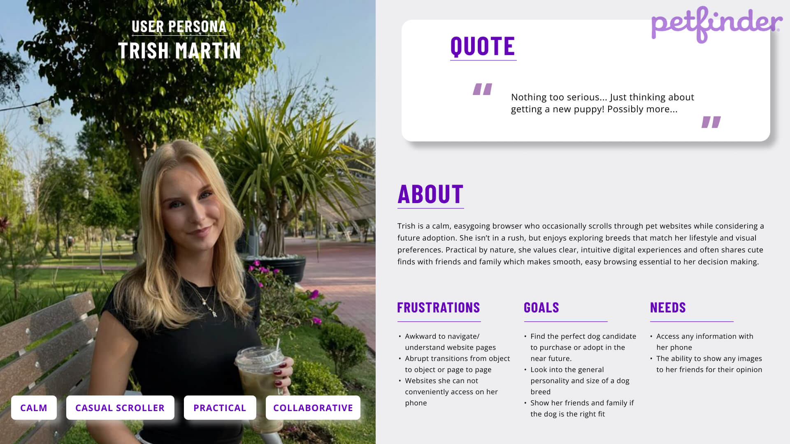
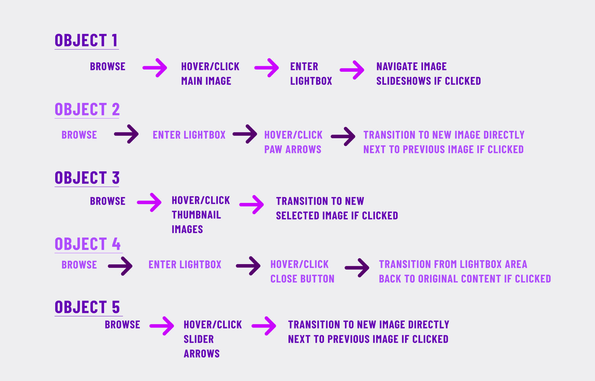
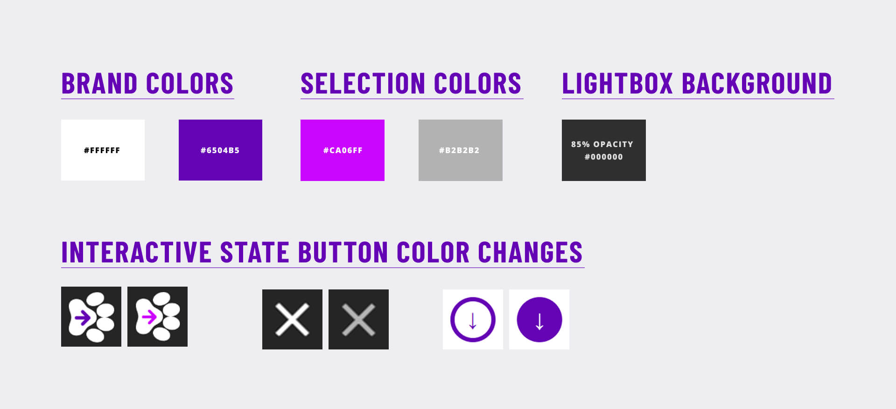
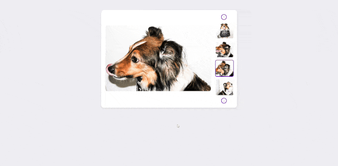
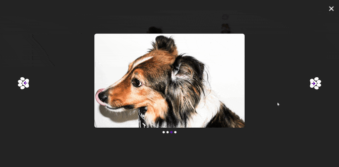
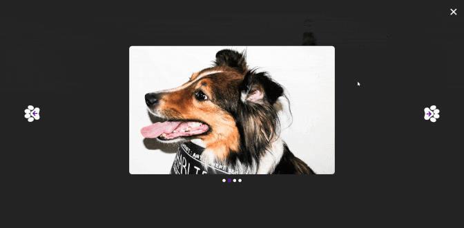
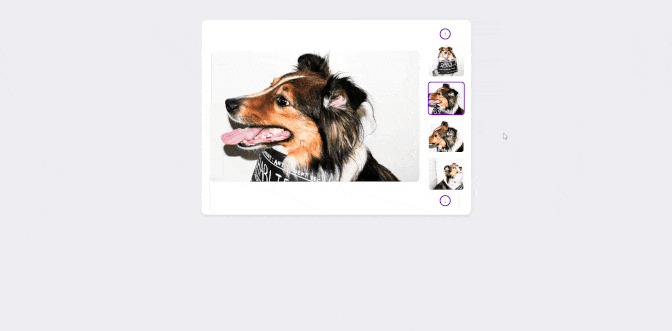

URL TO INTERFACES
REDESIGNED INTERFACE https://idm241-lg845.netlify.app/final-piece/
OVERVIEW

Although very straight to the point when finally clicked on by the user, the original dog slideshow on Petfinder lacked warmth, clarity, and intuitive interaction, making it difficult to fully understand both the breed and the intended micro interaction experience. With no clear navigation cues, minimal motion feedback, and inconsistent animation states among slides, users had little guidance or motivation to explore.
During the redesign period, the site updated its slideshow; but the new layout became visually fragmented with elements misaligned, irregular spacing, and content occasionally cut off, further emphasizing the need for a more structured interaction model.
Over a ten week time frame, I redesigned an HTML-based prototype that focused on creating a friendlier, more dog-centered interaction. By introducing softer transitions, paw-shaped navigation controls, restructuring the slideshow layout, and adding playful animations across the five interactive models, the updated experience improves affordance and creates a warmer, more emotional tone that better aligns with the content being presented.
These changes transform the slideshow from a static image viewer into a more exploratory and engaging moment within the site, encouraging users to meaningfully interact with the breed visuals rather than simply scrolling past them.
CONTEXT AND CHALLENGES
Petfinder's specific dog breed page serves as a quick informational entry point for users researching a particular breed with a possible adoption consideration taken into account. The original slideshow provided visual reference, but did so with unclear navigation and inconsistent motion cues; this can result in a disengaging experience. Over the course of 10 weeks, the purpose of this redesign was to evaluate and enhance the micro interaction within the slideshow section so users would feel encouraged to browse, interact, and understand the image and the concept of the breed.
THE PROBLEM Lack of Affordance, Interesting Animations, Consistency
While the slideshow technically displays imagery, the thumbnail area lacks clear affordance, giving users little indication that the gallery can be interacted with beyond the cursor changing to a pointer. Interaction states are also inconsistent. Certain elements trigger animations while others remain static. Clicking on the main image or the close (X) button results in no transitional feedback, yet clicking on the arrows or thumbnails triggers a slide animation. This uneven behavior may create abrupt transitions that interrupt the expected continuity of the interaction, making the slideshow feel partially unfinished rather than intentional. The primary goal of this project is to transform an underdeveloped interaction into a more polished experience that better aligns with the emotional tone of viewing and learning about a dog breed.
GOALS & OBJECTIVES Improved Animations...Encouragment to continue
Key indicators defined by measurable improvements would be the increased animation across the images and reduced single image exits; overall though, a more consistent user progression with proper formatting would encourage continued browsing rather than stopping after the initial view. Ensuring that each interaction state responds in a predictable manner would also reinforce the indented experience. These enhancements would not only improve usability but also support a stronger emotional connection with the content.
PROCESS AND INSIGHTS
To redesign the slideshow in a way that felt intentional, intuitive, and emotionally aligned with Petfinder’s user experience, I broke the project into several research driven steps. This process allowed me to move beyond simply “fixing animations” and instead understand the deeper interactions, motivations, and behaviors driving the user experience.
 USER PERSONA Trish Martin, Casual and Practical
Because Petfinder attracts a wide range of users, from casual scrollers to potential adopters, I created a primary user persona, Trish Martin, to anchor all design decisions. Trish’s calm, practical browsing habits highlighted the need for an interface that felt intuitive, gentle, and emotionally warm rather than abrupt or technical. Her frustrations with unclear navigation and inconsistent visual feedback directly informed the redesign direction.
 UX FLOW 5 Objects Understanding
I mapped a simple user journey that followed Trish’s behavior: Browse → Notice image → Hover/Click → Enter Lightbox → Navigate thumbnails → Exit → Share
A better understanding of the journey map was essential for me to break down the slideshow into individual steps to analyze as separate objects. Instead of looking at the overall section as a big, vague experience, a journey map would let me see exactly where things could stay as is or needed improvement.
 STYLE SHEET Original Colors, Slight Rebranding
Using the original Petfinder color palette is vital because it preserves brand recognition and visual continuity across the entire experience. Since users already associate Petfinder’s signature colors with pet related browsing, maintaining that palette ensures the redesigned slideshow feels native to the platform rather than an external addition. I expanded on this by incorporating more of the original colors directly into the micro interactions and the objects themselves. Subtle shifts to lighter and darker variations of Petfinder’s core hues were used to indicate hover, active, and click states, creating clearer behavioral feedback while still remaining true to the brand. This approach strengthens both usability and emotional consistency, helping users feel grounded in the familiar Petfinder environment.
THE SOLUTION
Again, a need for a consistent use of animations were needed to create clearer feedback and a more intuitive browsing experience.
 OBJECT 1 - MAIN LARGE IMAGE Changes
Why
Previously, the interaction relied solely on a cursor change to communicate clickability, which offered minimal visual feedback and could easily be overlooked. The large image is the primary focus of the user. By providing a scaling and brightness visual change cue alongside the change of the cursor to the pointer during the hover state, it communicates to the user that the image is clickable. When clicked, the upward movement and fade transition reinforces that the user is shifting into a focused viewing state in a playful pet centric manner.
 OBJECT 2 - LIGHT BOX ARROWS Changes
Why
Previously, a simple slide animation displayed when the arrow was clicked. With the improvements, the simple arrows were now paw shaped with an animated bounce effect when clicked to consistently provide a pet focused theme. The arrow movement reinforces a cause and effect relationship to help users understand that the view will shift in response to their action.
 OBJECT 3 - X/CLOSE BUTTON Changes
Why
Closing the gallery previously felt abrupt, with no visual cue other than the cursor to pointer change. By animating the X, fading the gallery, and returning to the main view with a progressive shift, the exit action feels intentional rather than harsh. Users retain context because the lightbox fades back into the original image rather than resetting entirely.
OBJECT 4 - SLIDER NAVIGATION ARROWS Changes
Why
The original site lacked explicit navigation controls, offering no clear way to move through the slideshow beyond a hover cursor change. The updated design implements slider navigation arrows that provide a more clear spatial direction from image to image. These controls not only increase comprehension of the thumbnail area, but also gives users a direct agency in choosing where to go next rather than relying on guessing.
 OBJECT 5 - THUMBNAIL SLIDER IMAGES Changes
Why
Thumbnails serve as previews, so interaction must visually confirm selection. The purple border and fade transition ensure that users always understand which image is currently active. The hover scaling adds a tactile quality that matches the rest of the object animations in an engaging and intentionally consistent manner.
Across all five objects, the intention was to create a continuous, motion based interaction system. This is to be driven by a more emotionally oriented user experience that aligns with the playful, pet centered nature of the content.
THE RESULTS
The redesigned slideshow addresses the primary goals of improving affordance, emotional tone, and interaction consistency. By implementing clear navigation cues, predictable animation states, and a more visually engaging structure, the prototype demonstrated measurable improvements in user progression through the gallery. Through this process, I learned the importance of breaking an interaction into smaller components before attempting to solve the larger visual behavior. Mapping the user journey and assigning personality to the persona provided clearer direction for the micro interactions, and analyzing each object individually made it easier to maintain consistency across the entire system. In the near future, I plan to expand on this by refining animation/transition timing to correlate with the user's experience.